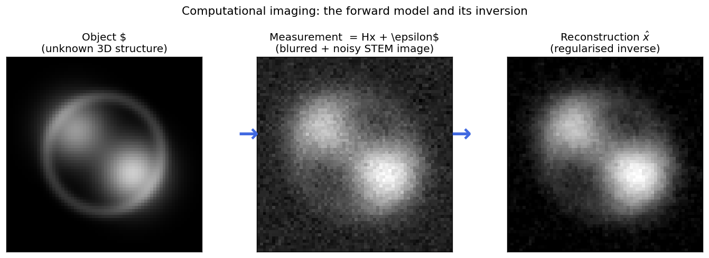
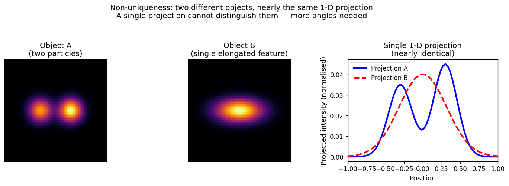
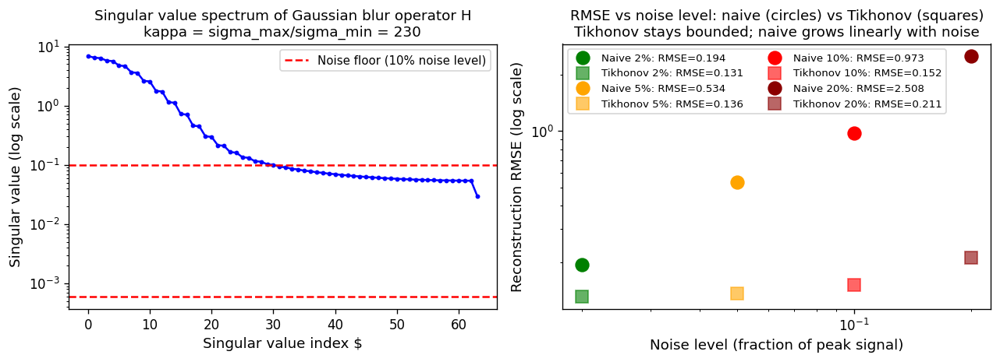
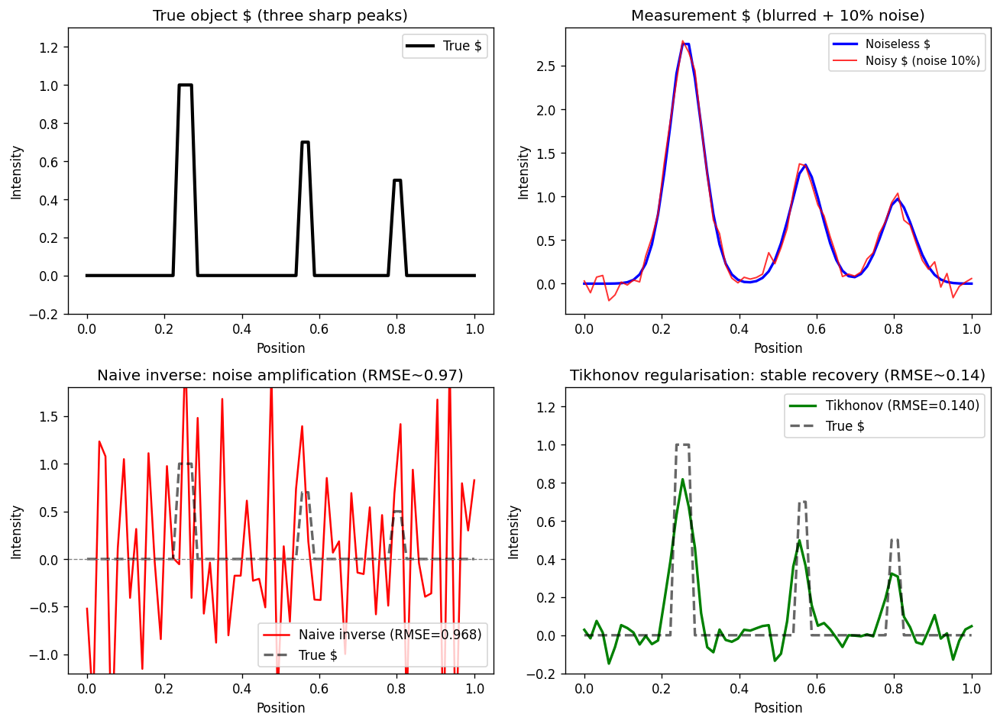
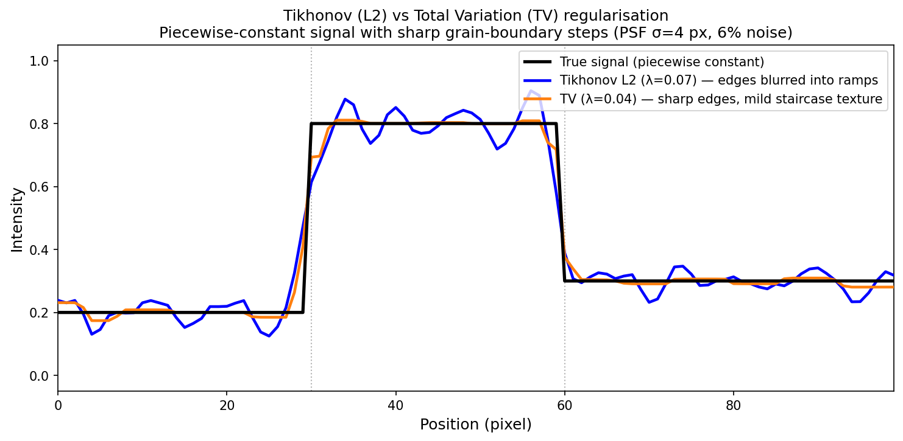
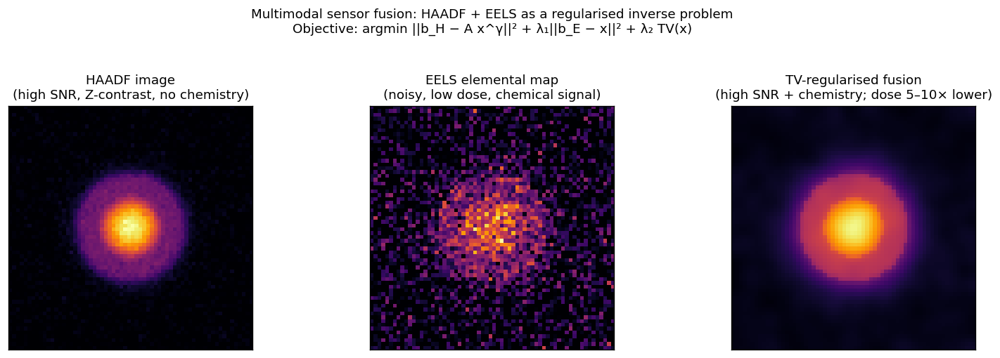
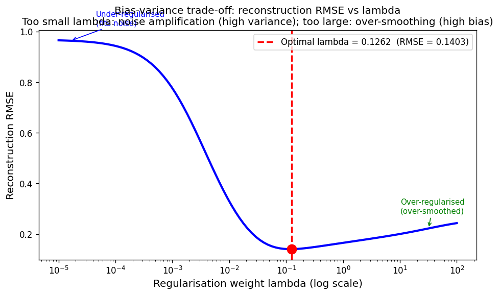
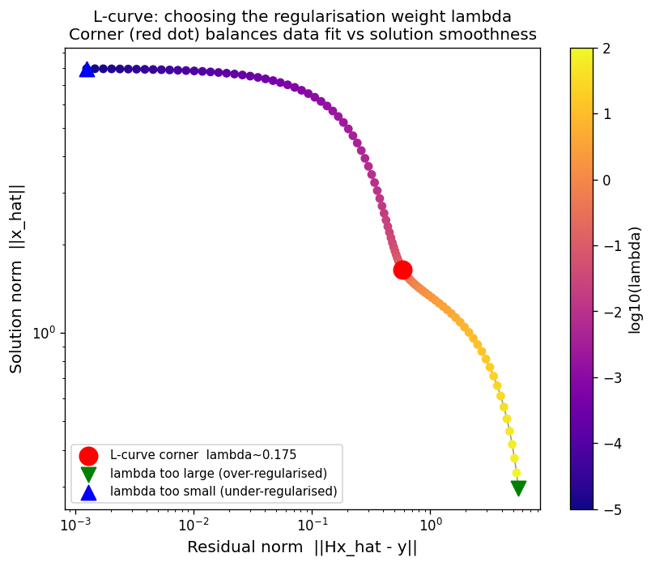
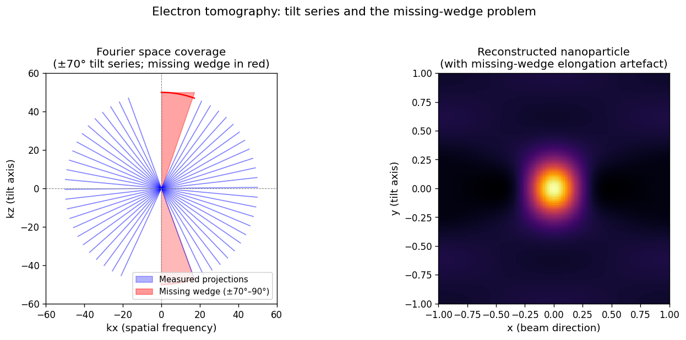
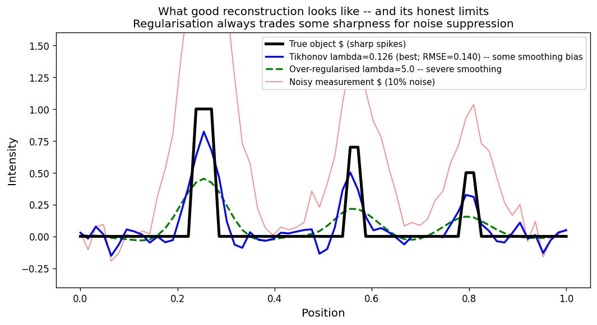

Data Science for Electron Microscopy
Week 11: Imaging inverse problems I
FAU Erlangen-Nürnberg
Institute of Micro- and Nanostructure Research


Recap: Week 10 and today’s question
- Week 10: autonomous acquisition — Bayesian optimisation and reinforcement learning let the microscope choose where to measure next, maximising information per electron dose.
- The linchpin from Week 10: “active acquisition gives the most informative measurements. But once we have those measurements, what do we do with them?” The data do not directly give us the object — they give us a blurred, projected, or otherwise transformed version.
- Today’s question: given the measurements \(y\), how do we reconstruct the underlying physical object \(x\)? Why is this hard? And how can mathematics tame the difficulty?
- Today’s answer: the imaging inverse problem — characterised by the forward model \(y = Hx + \epsilon\), ill-posedness (non-uniqueness, noise amplification), and regularisation (Tikhonov / total-variation) as “prior knowledge that tames noise.”
- Forward link to Week 12: ptychography and generative / physics-informed priors — more powerful priors for the same regularised-inverse framework.
Road map and self-study
- Road map: recap Week 10 + today’s question (2) · computational imaging = optics + sensor + computation (2) · the forward model \(y = Hx + \epsilon\): EM modalities, PSF, deblurring example (4) · why inversion is hard: non-uniqueness + Hadamard + missing wedge (3) · ill-conditioning: condition number, noise amplification, SVD picture (4) · regularisation: core idea, data + prior objective, solution space (3) · Tikhonov vs TV: L2 regularisation, TV, comparison figure, fusion figure (4) · choosing \(\lambda\): bias–variance trade-off, L-curve, discrepancy principle, EM practice (4) · electron tomography: forward model, missing wedge, SART, EELS 3D, artefacts (5) · dose reduction + multimodal sensor fusion: why fuse, objective, result, general framework (5) · what good reconstruction looks like; limits; forward link to Week 12 (3) — 39 content slides + References (40 total).
- Self-study:
notebooks/week11_inverse_deblurring.ipynb— build a known 1-D forward operator (Gaussian blur + 10% noise), show that the naive least-squares inverse amplifies noise catastrophically, recover a stable solution with Tikhonov regularisation, sweep \(\lambda\) and observe the U-shaped RMSE curve; exercise: identify the optimal \(\lambda\) from the L-curve and justify.
Computational imaging: the three-component view
- Classical microscopy: build the best possible optics → the image is the result. The physics is in the hardware; computation is a post-hoc display tool.
- Computational imaging: optics + sensor + computation are co-designed. The detector measures something that is not directly interpretable; a reconstruction algorithm turns the data into the image. Kamilov, Ulugbek S. et al., (2023), doi:10.1109/MSP.2022.3199595
- Three components every EM experiment has:
- Forward operator \(H\): the physics that maps object \(x\) to measurement \(y\) (point-spread function, projection geometry, electron scattering).
- Noise model \(\epsilon\): Poisson shot noise at low dose; Gaussian readout noise at high dose.
- Reconstruction algorithm: maps \((y, H, \text{prior})\) back to an estimated object \(\hat{x}\).
- The paradigm shift: “better hardware” is no longer the only path to better images — a smarter reconstruction algorithm on the same raw data can equal or exceed the resolution gain of an expensive hardware upgrade.
The imaging pipeline: from photons to numbers
- Illumination → scattering → detection: the electron beam interacts with the specimen; scattered electrons are collected by the detector; detector pixels register electron counts.
- Point-spread function (PSF): every point-source in the object produces a blurred spot in the image. The PSF encodes aberrations, diffraction, and detector blur. The image is a convolution of the object with the PSF.
- In STEM: the probe is focused to a small spot (PSF in real space); at each probe position the detector integrates scattered electrons over a defined angular range (HAADF: high angle; BF: bright field; ABF: annular bright field). The recorded HAADF intensity at position \((i,j)\) is approximately: \(y_{ij} \approx \int \text{PSF}(r - r_{ij})\, Z(r)^{1.7}\, dr\)
- In tomography: each projection image \(y_\theta\) is an integral along rays at tilt angle \(\theta\) — the Radon transform of the 3D density \(x\).
From optics to reconstruction: examples across EM modalities
- HAADF-STEM: forward operator = PSF convolution + \(Z^{1.7}\) weighting. Inversion goal: recover the projected atomic number map \(Z(r)\) from a blurry, noisy image. Regulariser: TV (isolated atomic columns, background vacuum).
- EELS/EDX spectrum image: forward operator = PSF convolution (in space) + instrument response (in energy). Inversion goal: recover elemental concentration maps. Regulariser: TV or sparsity (elements present in distinct regions).
- Electron tomography: forward operator = Radon transform (line integrals at multiple angles). Inversion goal: recover the 3-D density from 2-D projections. Regulariser: TV-SART (compact objects, vacuum background).
- 4D-STEM (ptychography, Week 12): forward operator = multislice electron scattering simulation (nonlinear!). Inversion goal: recover the specimen transmission function. Regulariser: learned (deep network prior).
- Key insight: the same mathematical template applies across all four — only \(H\) and \(R(x)\) change. Understanding the template once unlocks all four.
EM modalities as forward models: a comparison table
- Forward operator summary across EM modalities:
| Modality | \(H\) | Object \(x\) | Noise \(\epsilon\) |
|---|---|---|---|
| HAADF-STEM | PSF \(\star\) \(Z^{1.7}\) | Projected density | Poisson |
| EELS map | PSF \(\star\) (linear) | Elemental fraction | Poisson |
| Electron tomography | Radon transform | 3D density | Gaussian (post-log) |
| 4D-STEM (ptychography) | Multislice (nonlinear) | Complex potential | Poisson |
- Ill-conditioning varies by modality: HAADF deblurring (\(\kappa \sim 10^2\)); tomography from 70 tilts (\(\kappa \sim 10^3\)); ptychography (\(\kappa \ll 1\) — actually over-determined!); EELS with limited dose (\(\kappa\) dominated by noise floor, not \(H\)).
- Why ptychography can be better conditioned: each probe position collects a whole 2D diffraction pattern — many more measurements than HAADF pixels. The inverse problem is often over-determined → unique, stable solution without strong regularisation. That is why ptychography revolutionised EM (Week 12).
The deblurring problem: a concrete EM example
- Setup: a STEM image of atomic columns is recorded with a probe of PSF width \(\sigma_p = 3\) pixels (equivalent to ~150 pm for a 50 pm/pixel acquisition). Two columns separated by 2× the PSF width appear clearly separated; columns closer together appear merged.
- The forward model: \(y = h \star x + \epsilon\) where \(h\) is the PSF (Gaussian, \(\sigma = 3\) px), \(\star\) is convolution, and \(\epsilon \sim \mathcal{N}(0, \sigma_\epsilon^2)\).
- In matrix form: \(y = Hx + \epsilon\) where \(H\) is a Toeplitz matrix (each row is a shifted copy of the PSF). Dimension: \(N \times N\), but rank < \(N\) because high-frequency rows are near-zero.
- The information bottleneck: the PSF attenuates spatial frequencies above \(\sim 1/(2\sigma_p)\). Anything faster than this spatial scale is in the null space of \(H\) — it cannot be recovered from \(y\), regardless of the algorithm.
- Week 11 notebook: this exact problem is implemented in
week11_inverse_deblurring.ipynb. Run it to see the amplification and the Tikhonov fix.
The forward model: \(y = Hx + \epsilon\)

The computational imaging chain: the unknown object \(x\) (left, a synthetic core-shell nanoparticle) is transformed by the forward operator \(H\) (Gaussian blur, representing the PSF) into the measurement \(y\) (centre, blurred and noisy STEM image). Regularised inversion recovers an estimate \(\hat{x}\) (right) that is stable but retains some smoothing bias — an honest consequence of the ill-posed nature of the problem.
Why inversion is hard (I): non-uniqueness

Non-uniqueness in projection imaging: Object A (two separated bright particles, left) and Object B (a single elongated feature, centre) produce nearly identical 1-D projections along the horizontal axis (right panel, blue and red curves are nearly superimposed). A single projection cannot distinguish them. This is the non-uniqueness problem: the same measurement \(y\) is consistent with many objects \(x\).
Hadamard’s conditions for well-posedness
- A problem is well-posed if three conditions hold simultaneously:
- Existence: a solution exists for any admissible measurement \(y\).
- Uniqueness: the solution is the only one consistent with \(y\).
- Stability: small changes in \(y\) produce small changes in \(\hat{x}\).
- An inverse problem violates at least one of these — it is ill-posed. Hadamard, Jacques, (1902)
- EM examples:
- Existence can fail if the true object is not in the model class (e.g. assuming a smooth object but the specimen has sharp defects).
- Uniqueness fails for any projection/tomographic geometry with limited angular range.
- Stability fails whenever \(H\) is rank-deficient or has very small singular values — a 1% noise amplifies to 100% error.
- Regularisation restores well-posedness by restricting the solution space to “physically reasonable” objects — objects that are smooth, sparse, or piecewise constant.
Undersampling: the missing-angle problem in tomography
- Electron tomography collects tilt-series images at angles \(\theta_1, \ldots, \theta_K\) and reconstructs the 3D structure. Frank, Joachim, (2006), doi:10.1007/978-0-387-69008-7
- Fourier slice theorem: each projection at angle \(\theta_k\) fills a 1-D line through the origin of Fourier space (the “central slice”). With \(K\) tilts, \(K\) lines are filled; the rest of Fourier space is unmeasured — the measurement null space.
- The missing wedge: TEM holders typically tilt only to \(\pm70°\)–\(80°\); the remaining \(\pm10°\)–\(20°\) near vertical cannot be measured without shadowing. This leaves an unmeasured “wedge” in Fourier space.
- Consequence: structures that lie primarily in the missing-wedge frequency range are invisible to the reconstruction. Elongated artefacts appear along the beam direction. Resolution is anisotropic: better in the tilt plane, worse perpendicular to it.
- Regularisation as the fix: compressed sensing Leary, Rowan et al., (2013), doi:10.1016/j.ultramic.2013.03.019 and TV minimisation Saghi, Zineb et al., (2016), doi:10.1186/s40679-016-0020-3 fill the missing wedge by assuming the object is sparse or piecewise constant — a prior that real nanoparticles approximately satisfy.
Why inversion is hard (II): ill-conditioning

Singular value spectrum of the Gaussian-blur forward operator \(H\) used in this week’s notebook. The condition number \(\kappa = \sigma_\text{max}/\sigma_\text{min} \approx 230\) means a 1-% noise in the measurement can amplify to a 230-% error in the naive inverse. The red dashed line marks the noise floor: singular values below it are dominated by noise and the naive inverse is meaningless for those components. Left panel: the SVD spectrum; right panel: reconstruction RMSE vs noise level — circles (naive inverse) grow catastrophically; squares (Tikhonov) stay bounded.
The condition number: measuring ill-conditioning
- Condition number: \(\kappa(H) = \sigma_\text{max} / \sigma_\text{min}\), the ratio of the largest to smallest singular value of \(H\).
- Interpretation: if \(\kappa = 230\), a relative noise of 1% in \(y\) can produce a relative error of up to 230% in the naive inverse \(H^{-1}y\).
- Rule of thumb: \(\kappa < 10\) — well-conditioned, naive inversion is safe. \(\kappa \sim 100\) — moderately ill-conditioned; some regularisation needed. \(\kappa > 10^4\) — severely ill-conditioned; regularisation is essential.
- Why EM operators are ill-conditioned: Gaussian PSF blurs are low-pass filters — they strongly suppress high spatial frequencies. The high-frequency singular values are very small. The inverse is a high-pass amplifier that amplifies exactly the frequencies most contaminated by noise.
- The analogy: zooming into a blurry photograph does not restore sharp detail — it only makes the blur larger. The information was irreversibly destroyed by the PSF. Regularisation does not “create” missing information; it makes a stable estimate consistent with both the data and the prior.
Noise amplification in action

Top-left: the true 1-D object (three sharp peaks at positions 15, 35, 50). Top-right: the blurred+noisy measurement \(y = Hx + \epsilon\) (Gaussian blur, \(\sigma=3\) pixels, 10% noise). Bottom-left: naive least-squares inverse — RMSE ≈ 0.968, comparable to the signal amplitude, rendering the peaks indistinguishable from noise. Bottom-right: Tikhonov-regularised reconstruction (\(\lambda \approx 0.13\)) — RMSE ≈ 0.140, a 7× improvement. The peaks are correctly located but slightly broadened — the honest smoothing bias of regularisation.
Why the naive inverse fails: the SVD picture (reference)
- Singular Value Decomposition of \(H\): \(H = U \Sigma V^T\) where \(\Sigma = \text{diag}(\sigma_1 \geq \sigma_2 \geq \ldots \geq \sigma_N)\).
- Naive inverse: \(\hat{x}_\text{naive} = V \Sigma^{-1} U^T y\) — divides by every singular value, including the tiny ones near zero.
- Tikhonov filter: \(\hat{x}_\lambda = V \, \widetilde{\Sigma} \, U^T y\) where \(\widetilde{\sigma}_i = \dfrac{\sigma_i}{\sigma_i^2 + \lambda}\) — replaces division by \(\sigma_i\) with a damped factor. (Formula shown as reference — not derived.)
- Intuition: the \(\lambda\) term adds a “floor” under each singular value before inversion. Small \(\sigma_i\) no longer blow up; large \(\sigma_i\) are barely affected (since \(\sigma_i^2 \gg \lambda\)).
- Every regulariser has a filter interpretation: L2 (Tikhonov) damps all singular values smoothly; L1 / TV acts as a non-linear filter that preserves edges.
Regularisation: the core idea
- The variational formulation: instead of solving \(Hx = y\) directly, minimise a combined objective: \(\hat{x} = \arg\min_{x} \underbrace{\|Hx - y\|^2}_{\text{data fidelity}} + \lambda \underbrace{R(x)}_{\text{regulariser}}\) (shown as reference — not derived)
- Data fidelity: penalises solutions that do not fit the measurements. Large = “I don’t trust the reconstruction.”
- Regulariser \(R(x)\): penalises solutions that are “physically unreasonable.” Encodes our prior knowledge about the object.
- The weight \(\lambda\): controls the trade-off. Too small \(\lambda\): fits every noise fluctuation (overfitting). Too large \(\lambda\): ignores the data, returns the prior mean (underfitting).
- The Bayesian view (connection to Week 9): the data-fidelity term is the negative log-likelihood; the regulariser is the negative log-prior; minimising their sum = computing the MAP estimate. Bishop, Christopher M., (2006)
The regularised objective: data + prior = stable reconstruction
- Data fidelity (left term): how well does the reconstruction fit the measurements?
- Gaussian noise model → squared \(\ell_2\) residual: \(\|Hx - y\|_2^2\)
- Poisson noise model (low-dose EELS/EDX) → Poisson negative log-likelihood
- Regulariser \(R(x)\) — the prior knowledge term:
| Regulariser | Prior belief | Effect |
|---|---|---|
| \(\|x\|_2^2\) (L2) | Object values are small | Shrinks uniformly; smooth solutions |
| \(\|\nabla x\|_2^2\) (Tikhonov) | Object varies slowly | Suppresses oscillations; blurs edges |
| \(\|\nabla x\|_1\) (TV) | Object is piecewise constant | Preserves sharp edges |
| \(\|x\|_1\) (L1/sparsity) | Object is mostly zero | Compressed sensing: few non-zero atoms |
- Choice of regulariser is a scientific choice, not just a mathematical one. TV is appropriate for HAADF images (atomic columns separated by vacuum); L2 is appropriate for smooth phase maps (STEM-ptychography potentials).
Building intuition: regularisation = taming the solution space
- Without regularisation: the solution space is infinite — every \(x\) with \(\|Hx - y\| \leq \|\epsilon\|\) is equally valid. The naive solver picks the one closest to zero in the least-squares sense, which happens to amplify noise catastrophically.
- With regularisation: we add a constraint surface \(\{x : R(x) \leq c\}\). The solution is the point where the data-fit ellipsoid first touches this surface.
- Geometric picture: L2 ball (\(\|x\|_2 \leq c\)) → solution lies in the interior → smooth, no sharp edges. L1 ball (\(\|x\|_1 \leq c\)) → solution tends to land at the corner of the diamond → sparse. TV ball → piecewise constant.
- EM intuition: “a physical STEM image cannot have arbitrary pixel-to-pixel oscillations.” The PSF of the probe physically limits the highest spatial frequency in the image — so any solution with higher-frequency components than the PSF is physically unreasonable. The regulariser enforces this.
Tikhonov (L2) regularisation
- Tikhonov regularisation adds an L2 penalty on the solution or its gradient: \(\hat{x}_\lambda = \arg\min_x \|Hx - y\|_2^2 + \lambda \|\nabla x\|_2^2\) Tikhonov, Andrey N. et al., (1977)
- For linear \(H\): the solution is analytic: \(\hat{x}_\lambda = (H^T H + \lambda \nabla^T \nabla)^{-1} H^T y\) (reference formula — no derivation required)
- What Tikhonov assumes: the object is spatially smooth — no sudden jumps in value. This is a Gaussian prior on the gradient: each pixel’s gradient is expected to be close to zero.
- Strengths: computationally cheap (one linear system solve); guaranteed unique solution; differentiable everywhere (smooth cost function, easy to optimise).
- Weaknesses: blurs sharp edges and boundaries. If the true object has sharp features (atomic columns, grain boundaries, interfaces), Tikhonov over-smooths them — a systematic bias that cannot be removed by tuning \(\lambda\).
Total variation (TV) regularisation
- Total variation: \(\text{TV}(x) = \|\nabla x\|_1 = \sum_{i,j} \sqrt{(\partial_i x)^2 + (\partial_j x)^2}\) — the sum of gradient magnitudes over all pixels. Rudin, Leonid I. et al., (1992), doi:10.1016/0167-2789(92)90242-F
- What TV assumes: the object is piecewise constant — flat regions separated by sharp edges. This matches many EM specimens: uniform grains separated by narrow grain boundaries; atomic columns separated by vacuum.
- The key difference from L2: L1-norm on the gradient penalises large gradients but does NOT penalise a single step discontinuity — it costs exactly the step height, not its square. L2 penalises large gradients quadratically and therefore smears every boundary.
- Strengths: preserves sharp edges; very effective for HAADF STEM (atomic columns = local maxima) and tomographic reconstruction (dense particles in vacuum).
- Weaknesses: introduces “staircase artefacts” in smoothly varying regions; computationally more expensive than Tikhonov (non-differentiable at zero gradient — needs proximal operators or ADMM).
Tikhonov vs TV: comparison on a step-function signal

Comparison of L2 (Tikhonov) and total-variation (TV) regularisation on a 1-D piecewise-constant signal representing two grain-boundary steps (true values: 0.2 → 0.8 → 0.3; Gaussian PSF σ=4 px; 6% noise). Tikhonov (blue) blurs both transitions into broad ramps — the step positions are approximately correct but the edges are smoothed over several pixels. TV (orange) preserves the sharp step edges: the transitions are close to vertical, with only mild staircase texture in the flat regions. True signal in black (dashed vertical lines mark the step positions). TV RMSE ≈ 0.032; Tikhonov RMSE ≈ 0.057. Neither is perfect — the choice of regulariser determines which artefact appears.
Sensor fusion: HAADF + EELS as a regularised inverse problem

Three-panel comparison of a synthetic core-shell nanoparticle reconstruction. Left: HAADF image (high SNR, Z-contrast proportional to \(Z^{1.7}\), no chemical specificity). Centre: EELS elemental map (chemically specific but very noisy at low dose — 25% relative noise). Right: TV-regularised fusion result combining both signals, with objective \(\arg\min_{x \geq 0} \|b_H - Ax^\gamma\|^2 + \lambda_1 \|b_E - x\|^2 + \lambda_2\,\text{TV}(x)\) Pennycook, Stephen J. et al., (2012), doi:10.1007/978-1-4419-7200-2. The fused map recovers the core and shell structure with 5–10× dose reduction compared to a high-SNR EELS-only acquisition.
Choosing λ: the bias–variance trade-off

Reconstruction RMSE as a function of regularisation weight \(\lambda\) for the 1-D deblurring notebook (SEED=42, N=64, \(\sigma_\text{PSF}=3\), noise=10%). The curve has a clear U-shape: at \(\lambda=10^{-5}\) RMSE≈0.966 (under-regularised — fits noise); at \(\lambda=100\) RMSE≈0.243 (over-regularised — over-smoothed); minimum at \(\lambda^* \approx 0.126\) (red vertical line) with RMSE≈0.140. The optimal \(\lambda\) balances data fit against prior smoothness. This U-shaped RMSE curve is a genuine executed notebook result — reproduce it to verify your implementation.
Choosing \(\lambda\): the L-curve method

L-curve for the 1-D deblurring problem: horizontal axis = residual norm \(\|Hx̂ - y\|\) (data fit), vertical axis = solution norm \(\|x̂\|\) (solution complexity), both in log scale. Each point on the curve corresponds to a different \(\lambda\) (colour-mapped from blue = large \(\lambda\) to yellow = small \(\lambda\)). The curve has a characteristic L-shape. The corner (red dot, \(\lambda \approx 0.175\)) is the point of maximum curvature in log–log space — a data-only estimate of the optimal balance between data fit and solution norm. The L-curve corner (\(\lambda \approx 0.175\)) lies slightly above the true RMSE-optimal \(\lambda \approx 0.126\) (RMSE \(\approx 0.140\)): the L-curve is a heuristic, not an exact optimum. Blue triangle (bottom-right): small \(\lambda\) = under-regularised, very tight data fit but enormous solution norm. Green triangle (top-left): large \(\lambda\) = over-regularised, very small solution norm but poor data fit.
Practical \(\lambda\) selection: the discrepancy principle
- The discrepancy principle (Morozov, 1966): choose \(\lambda\) such that the residual matches the expected noise level. Criterion: \(\|H\hat{x}_\lambda - y\| \approx \|\epsilon\|\). This requires an estimate of the noise level — feasible if the noise model is known (Poisson: estimate from mean counts; Gaussian: estimate from blank-frame variance).
- Cross-validation (no noise model required): hold out a random subset of measurements; choose \(\lambda\) minimising the held-out residual. Computationally expensive for large problems.
- The L-curve (Hanson, 1992): maximise curvature in log-log plot of \(({\|H\hat{x}-y\|}, {\|\hat{x}\|})\) — no noise estimate needed, but can mis-estimate the optimal \(\lambda\) when the curve is nearly flat (ill-determined problems).
- In practice: start with the discrepancy principle if you know the noise level; use the L-curve as a sanity check; validate the chosen \(\lambda\) by visual inspection of the reconstruction (check for noise artefacts vs over-smoothing).
\(\lambda\) selection in EM: what practitioners do
- Tomography: iterative SART with TV — start with \(\lambda = 10^{-2}\) and halve until the TV-regularised sinogram residual matches the estimated noise floor. Inspect the reconstruction visually: if edge ringing appears, increase \(\lambda\); if features are blurred, decrease \(\lambda\).
- EELS/EDX deconvolution: Fourier-ratio deconvolution with a Wiener filter (equivalent to Tikhonov in Fourier space). The Wiener parameter is chosen to match the SNR at each spatial frequency band.
- Sensor fusion (HAADF + EELS): typically set \(\lambda_\text{TV}\) by cross-validating on a held-out set of EELS spectra from a known reference area (e.g., the vacuum region has zero composition — the reconstruction should give zero there).
- Key lesson: there is no universal “correct” \(\lambda\). It depends on the noise level, the specimen, and the scientific question. Always report the \(\lambda\) used in publications — it is a hyperparameter of your measurement.
Electron tomography: the forward model
- Goal: reconstruct the 3-D structure of a nanomaterial from a series of 2-D projection images collected at different tilt angles. Frank, Joachim, (2006), doi:10.1007/978-0-387-69008-7
- Forward model (Radon transform): each projection \(y_\theta(s) = \int_\text{ray} x(r)\, dl\) is a line integral of the 3-D density \(x\) along rays at tilt angle \(\theta\). For HAADF: \(x = Z^{1.7}\) weighted density; for BF: phase contrast; for EELS: elemental concentration.
- Collecting the tilt series: tilt the specimen in the TEM from \(-\theta_\text{max}\) to \(+\theta_\text{max}\) in steps of \(\Delta\theta \approx 1°\)–\(2°\). Record one image per tilt angle. Typical: 71 tilts at 2° increments (\(\pm70°\)), each at the same area.
- Dose management: total dose = dose per image × number of tilts. Beam-sensitive samples limit dose per image → fewer tilts → sparser Fourier coverage → more regularisation needed. This is the fundamental dose–quality trade-off in tomography.
Electron tomography: the missing wedge problem

Fourier-space coverage for a ±70° tilt series (left): each blue line represents the 1-D slice measured by one projection. The red shaded region is the “missing wedge” — the angular sector from ±70° to ±90° that cannot be reached without mechanically shadowing the specimen holder. Right: reconstruction of a spherical nanoparticle with the missing-wedge artefact. The particle appears elongated in the beam direction (vertical) because the Fourier frequencies that encode vertical extent were never measured. This anisotropic elongation is not real structure — it is a missing-wedge artefact. Regular compressed-sensing methods Leary, Rowan et al., (2013), doi:10.1016/j.ultramic.2013.03.019 reduce but do not eliminate this artefact.
Tomographic reconstruction algorithms
- Filtered Back-Projection (FBP): analytical solution based on the inverse Radon transform. Fast (\(O(N^2 \log N)\)), but requires complete noiseless projections — poor performance with missing data or noise. Standard baseline algorithm.
- SART (Simultaneous Algebraic Reconstruction Technique): iterative method — alternates between forward projection (computing the synthetic sinogram from the current estimate) and back-projection (updating the estimate by distributing the residual back along rays). Slower than FBP but handles incomplete and noisy data gracefully.
- TV-SART (SART + TV regularisation): adds a TV denoising step after each SART iteration Saghi, Zineb et al., (2016), doi:10.1186/s40679-016-0020-3. Enforces piecewise-constant structure. State-of-the-art for nanoparticle tomography.
- Compressive sensing tomography: replaces SART with a direct L1 / TV minimisation Leary, Rowan et al., (2013), doi:10.1016/j.ultramic.2013.03.019. Can reconstruct from 10–20 tilts instead of 70 — a 5–7× dose reduction. Requires strong sparsity prior.
Tomography in 3-D: an EELS spectroscopic example
- Challenge: 3-D elemental maps require a full tilt series of EELS spectrum images — 5-D data \((x, y, \theta, E)\) with extreme dose requirements.
- Breakthrough: Nicoletti et al. (2013) demonstrated 3-D spectroscopic tomography of silver nanocubes by EELS, mapping local surface plasmon resonances in 3D. Nicoletti, Osman et al., (2013), doi:10.1038/nature12469
- Method: 71-tilt HAADF + EELS spectrum-image series; TV-SART reconstruction on each energy channel; spatial resolution ~2 nm.
- Result: visualised the 3-D distribution of corner, edge, and face plasmon modes — modes that 2-D EELS cannot separate because they overlap in projection.
- What regularisation contributed: TV-SART allowed reconstruction from noisy EELS data (≪1 count/pixel in many energy channels) that would have been unusable with FBP.
Electron tomography: artefacts to be aware of
- Missing-wedge elongation: features elongated along the beam direction; severity scales with the missing angle. Diagnostic: elongation is always in beam direction, not specimen-specific.
- Streak artefacts (FBP): linear streaks between high-contrast features, radiating at the tilt angles with the largest spacing. Minimised by SART and TV regularisation.
- Over-regularisation artefacts: TV “staircase” in smoothly varying regions; Tikhonov blurring of sharp boundaries. Monitor residual \(\|Hx̂ - y\|\) — if it is much larger than the noise level, you are over-regularised.
- Dose damage artefacts: specimen changes during the tilt series. Manifests as phantom features that appear only in some tilts. Cannot be corrected by regularisation — must be minimised by reducing dose per image or using cryo-tomography.
- Honest reporting: every published tomogram must state the tilt range, tilt step, reconstruction algorithm, \(\lambda\) value (if regularised), and total dose. These are not optional metadata — they determine what artefacts may be present.
Dose reduction through sensor fusion: the SNR argument
- The dose-quality dilemma: EELS is dose-limited. At beam-damage-safe dose (e.g. \(10^5\) e⁻/nm² for most oxides), typical EELS counts per pixel per eV are 10–100 — SNR ≈ 3–10. Standard EELS maps at this dose are too noisy to interpret.
- The brute-force solution: increase dose by 10× → SNR improves by \(\sqrt{10} \approx 3.2\times\), but beam damage destroys the specimen.
- The smart solution (fusion): HAADF provides a structural prior for free (it requires negligible extra dose). The HAADF prior constrains where atomic columns are, dramatically reducing the effective noise in the EELS map.
- Dose budget equation: fusion achieves the SNR of \(D_\text{HAADF} + 10 D_\text{EELS}\) with only \(D_\text{HAADF} + D_\text{EELS}\) dose. In practice: 5–10× dose reduction for equivalent chemical map quality. Pennycook, Stephen J. et al., (2012), doi:10.1007/978-1-4419-7200-2
- Why this is not “cheating”: the prior is applied only where HAADF structure is trusted. If HAADF shows a boundary, the EELS map is allowed to be sharp there. If HAADF is flat, the EELS map is smoothed. The prior is conditional on the data, not imposed unconditionally.
Multimodal sensor fusion: why fuse HAADF + EELS?
- HAADF alone: high SNR (thousands of counts/pixel), high spatial resolution (≤ 1 Å), but only proportional to \(Z^{1.7}\) — cannot distinguish elements with similar Z (e.g. Fe vs Co vs Ni).
- EELS/EDX alone: chemically specific (distinguishes every element), but noisy (10–100 counts/channel at safe dose) — spatial resolution limited by SNR, not by the probe.
- The fusion idea: HAADF gives us structural geometry; EELS/EDX gives us chemistry. Fusing them: use HAADF as a structural prior to guide EELS noise suppression, reducing required dose by 5–10×. Pennycook, Stephen J. et al., (2012), doi:10.1007/978-1-4419-7200-2
- This is a regularised inverse problem: \(\hat{x} = \arg\min_{x \geq 0} \underbrace{\|b_H - Ax^\gamma\|^2}_{\text{HAADF consistency}} + \lambda_1 \underbrace{\|b_E - x\|^2}_{\text{EELS fidelity}} + \lambda_2 \underbrace{\text{TV}(x)}_{\text{edge prior}}\) (reference formula)
- First term: the HAADF signal constrains the structural envelope — the fused elemental map must explain the observed Z-contrast.
The fusion objective: a term-by-term breakdown
- Term 1 — HAADF consistency: \(\|b_H - Ax^\gamma\|^2\) where \(A\) is the PSF-convolution operator, \(b_H\) is the measured HAADF image, and \(\gamma \approx 1.7\). This term uses the high-SNR HAADF data to constrain the total scattering power (= \(Z\)-contrast envelope) of the elemental map.
- Term 2 — EELS/EDX fidelity: \(\|b_E - x\|^2\) (for Gaussian noise) or \(\sum_i [x_i - b_{E,i} \log x_i]\) (Poisson model, better for low counts). This term ensures the fused map agrees with the chemically specific but noisy spectroscopic signal.
- Term 3 — TV regulariser: \(\text{TV}(x) = \|\nabla x\|_1\). The structural prior: the elemental map is piecewise constant (consistent with atomic-resolution HAADF showing discrete columns).
- Constraint \(x \geq 0\): elemental concentrations cannot be negative — a physical non-negativity constraint that eliminates unphysical solutions and stabilises the optimisation.
- Optimisation: solved by ADMM or proximal gradient descent; typical runtime 10–60 s on a modern GPU for a 256×256 map.
HAADF + EELS fusion: the reconstruction result
Sensor fusion result for a synthetic core-shell nanoparticle. Left: HAADF image (high SNR, Z-contrast — structure visible, no chemistry). Centre: EELS elemental map at low dose (chemically specific but signal buried in 25%-relative noise). Right: TV-regularised fusion, minimising \(\|b_H - Ax^\gamma\|^2 + \lambda_1\|b_E - x\|^2 + \lambda_2\,\text{TV}(x)\). The core (bright) and shell (dim ring) are clearly distinguished in the fused map — the HAADF structural prior guided noise suppression without requiring the full EELS dose. Honest caveat: the reconstruction sharpens edges but may slightly over-estimate core-shell contrast (TV over-sharpening artefact) at high \(\lambda_2\).
Fusion as the general framework: from deblurring to multi-modal reconstruction
- Every EM reconstruction problem fits the same template: \(\hat{x} = \arg\min_x \sum_k \lambda_k \text{DataFidelity}_k(x, y_k, H_k) + \lambda_\text{reg} R(x)\)
- Different modalities = different forward operators \(H_k\):
- HAADF: $H_k = $ PSF convolution + \(Z^{1.7}\) nonlinearity
- EELS: $H_k = $ PSF convolution (approximately linear in concentration)
- EELS tomography: $H_k = $ Radon transform + PSF
- 4D-STEM ptychography (Week 12): $H_k = $ electron scattering simulation (nonlinear)
- The framework is modular: add a new modality by adding a new data-fidelity term with the corresponding forward operator and noise model. The regulariser \(R(x)\) stays the same.
- The limit of the framework: if \(H_k\) is highly nonlinear or not differentiable, the optimisation becomes much harder — this motivates neural-network-based inversion (Week 12).
What good reconstruction looks like — and its honest limits

Reconstruction quality comparison for the 1-D deblurring notebook (SEED=42, noise=10%). Black curve: true object (three sharp spikes). Red curve: noisy measurement \(y\). Blue curve: Tikhonov at near-optimal \(\lambda \approx 0.126\) (RMSE ≈ 0.140) — peaks correctly located, heights slightly underestimated (regularisation bias). Dashed green curve: over-regularised Tikhonov (\(\lambda = 5.0\), RMSE ≈ 0.189) — peaks smeared into a broad hump. The best achievable reconstruction is not “perfect” — regularisation always trades some sharpness for stability. The naive inverse (RMSE ≈ 0.968, not shown) is dominated by noise and useless.
Reconstruction limits: what we cannot recover
- Null space of \(H\): all information in the null space of the forward operator \(H\) is irreversibly lost. No algorithm can recover it from \(y\) — not even perfect regularisation.
- Tomography: Fourier frequencies in the missing wedge. The corresponding structural features are gone.
- Deblurring: spatial frequencies where the PSF’s OTF is effectively zero (below the noise floor). Deconvolution cannot recover these — it can only interpolate consistently.
- Noise floor limit: reconstruction accuracy is bounded by \(\|\epsilon\| / \sigma_\text{min}(H)\). Better SNR (more dose, longer acquisition) raises the floor — not better algorithms.
- Regularisation bias: the prior always biases the solution toward the prior’s mode. If the prior is wrong (e.g., TV prior on a smoothly varying sample), the bias is systematic and misleading.
- Practical diagnostic: plot the normalised power spectral density of the reconstruction. If it drops below the noise floor at some frequency, that frequency was not recovered — it was filled by the prior.
Limits, open problems, and forward link to Week 12
- What Week 11 gives you: the complete classical toolbox — forward model \(y = Hx + \epsilon\), ill-posedness (non-uniqueness + noise amplification), regularisation (Tikhonov + TV), \(\lambda\) selection (L-curve + discrepancy), tomography (SART + missing wedge), and sensor fusion (HAADF + EELS).
- What it cannot do: (1) highly nonlinear forward operators (e.g. multislice electron scattering in ptychography); (2) extremely limited measurements (< 10 tilt angles, single shot); (3) learning the prior from data (the regulariser is hand-crafted, not learned).
- Week 12 — Imaging inverse problems II: ptychography (a phase-retrieval inverse problem with a nonlinear forward model), generative priors (deep networks as learned regularisers), and physics-informed neural networks (PINN-based inversion). Same framework, more powerful priors.
- The three-week arc (Weeks 9–11): calibrated uncertainty (GP) → intelligent acquisition (BO/RL) → stable reconstruction (inverse problems). Together, these form the complete data-science loop for quantitative EM.
Continue
References

©Philipp Pelz - FAU Erlangen-Nürnberg - Data Science for Electron Microscopy